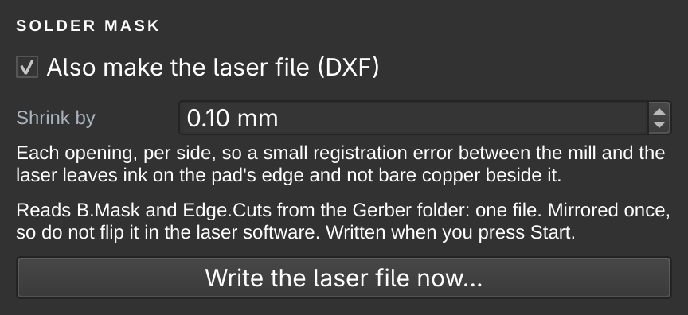

Solder mask on a milled board
Cover the copper side in UV-curing ink, cure it under the big UV lamp in the student lab, the lab where the boards are cut and drilled, and let the xTool fiber laser open the pads again. Single-sided boards, after the normal cut-out. SRM-CAM makes the laser's file from the same Gerber folder the mill's files came from.
Mads has this working with Mechanic solder mask on FR-4. It is still new on milled boards, so treat the numbers here as a starting point. Run the whole thing on a scrap milled board first. Silkscreen text over the mask is not part of this yet.
What you need
| What | Where, or which |
|---|---|
| Solder mask ink | Mechanic, UV-curing |
| UV lamp | The big UV lamp in the student lab, where the boards are cut and drilled |
| Laser | The xTool fiber laser. Its PC already has the presets loaded |
| A scrap milled board | For the cure test, the laser test, and seeing if pad edges show through the ink |
| Bracket | 3D-printed f1-pcb-mount.step from sphawes's repository, drawn for the xTool F1; his README lists the hardware it takes |
| Applying the ink | A squeegee, and a silkscreen frame or a transparency sheet |
| Cleaning and finishing | 600 grit paper, a file, IPA, Kapton tape, a pin vise |
1 · Mill it as normal
Mill through the cut-out as usual: Mill a board. Then file the tab stubs flat, especially at the corner that will go into the bracket: a stub there holds the whole board off the corner and everything lands that far out.
Rectangular boards suit this best, because the bracket relies on a square corner.
2 · Clean it
- SandAll over the copper side, with 600 grit.
- Blow it outThe channels and the holes. Milling dust left in a channel ends up under the ink.
- Wipe with IPAThen keep your fingers off the copper.
3 · Tape the laminate side
Cover the laminate side with Kapton tape, over every hole, and press it down around them. The ink goes on the other side, and without the tape it comes through the holes onto the laminate.
4 · Apply the mask
- A bead of inkMechanic mask, across one end of the copper side.
- Frame or sheetUse a silkscreen frame, which sphawes finds the more consistent, or lay a transparency sheet over the ink.
- Squeegee itAcross the board, as evenly as you can.
- Look for bubblesAlong the channels above all. A bubble left in a channel is a spot with no ink.
5 · Cure it under the big UV lamp
Take the board to the big UV lamp in the student lab, the same lab where you cut and drill. There is no cure time on this page, because it has to be found: put a scrap board under the lamp, inked the same way, and scrape the ink inside a channel on it. That is where the ink is deepest, and the last place to harden. If the top is hard and the bottom is soft, it needs longer. Then give the real board the time that worked.
6 · Make the laser file in SRM-CAM
SRM-CAM writes the file from the Gerber folder you loaded. You do not have to go back to KiCad's DXF plot.
- Plot B.Mask tooIn KiCad, : tick B.Mask with B.Cu and Edge.Cuts, into the same folder. Without it SRM-CAM says so, and the milling files still come out.
- Tick the box in Novice, the same place under in Pro. It is off until you tick it.
- Get the fileIn Novice, Start writes it into the run's folder (The job files on the Run it page). In Pro, Export the job writes it beside the
.ncfiles. Write the laser file now… writes it whenever you like, in both.

You get <name>_mask_mirrored.dxf: one file in millimetres at 1:1, with the pad openings as closed shapes on a layer called MASK_OPENINGS, and the outline on a layer called OUTLINE.
- Mirrored once, already. KiCad plots B layers seen from the top, and the board lies copper side up on the laser, just as it did on the mill. So the file is mirrored, openings and outline together, the way SRM-CAM mirrors the copper. Do not flip it in the xTool software.
- Smaller than the pads. Each opening is 0.10 mm smaller per side (Shrink by), because the mill and the laser are lined up by hand: a 0.9 × 1.5 mm pad gets a 0.7 × 1.3 mm opening. A small error then leaves ink on the pad's edge and not bare copper beside it.
- It says what it could not do. A pad too small to survive the shrink stays under the ink, and SRM-CAM tells you which one, on the setup page and on the run sheet.
7 · Set it up in the xTool software
- Import the DXF
<name>_mask_mirrored.dxf. Ungroup it if it comes in as a group. Leave its mirroring alone. - The outline: its own colour, output offSelect the outline and move it to its own colour, and turn that colour's output off. It is there to place the job by.
- Three check pads: another colourPick three pads far apart, not in a line, and move them to a colour of their own. They are step 9.
- The rest: Make Compound VectorSelect all the other pads and press Make Compound Vector, so they fill as one job.
- Engrave, with the presetSet both pad colours to Engrave and pick RemoveSolderMask. The presets are already loaded on the xTool PC, so pick it there. There is nothing to import.
| RemoveSolderMask | |
|---|---|
| Light source | Fiber IR |
| Power | 40 % |
| Speed | 800 mm/s |
| Passes | 6 |
| Line density | 300 lines/cm |
| Frequency | 30 kHz |
| Scan | Uni-directional, cross hatch |
Keep the enclosure closed, and vent it outdoors.
8 · Locate the board with the bracket
Print the bracket (f1-pcb-mount.step) and mount it on the laser's bed. The first time, find out where the job has to sit:
- A milled blank in the cornerPush it into the corner, its filed corner first.
- Score the outline at low powerTurn the outline's output on for this, at a low power that only marks the surface.
- Adjust until it landsChange X and Y and score again, until the line lands on the board's edges.
- Note X and YAnd reuse them for every board, for as long as the bracket stays where it is.
Then put the inked board in the corner the same way round as the drawing, and turn the outline's output off again.
9 · Check on three pads
Output only the three check pads, and leave the board where it is. Now look at the rim of ink around each opening. It should be even. The opening was drawn 0.10 mm smaller per side, so a job that is off by 0.10 mm brings it right up to the pad's edge on one side: that is the limit.
- Read the three rimsA rim thick on one side and thin on the other, the same way on all three, is a shift. Different on each is a turn.
- NudgeNudge X and Y, or the rotation, until the error is 0.10 mm or less. Those three are open now, so after a nudge, check again on another pad close to each.
- It also catches a mirrored jobA file flipped a second time puts the openings nowhere near the pads. An outline cannot show this; three pads far apart can.
The check only works if the pad edges show through the ink. Look at that on the scrap board, before you rely on it.
10 · Open the rest
Without moving the board, output the compound of the remaining pads. Inspect it before you take it out: a board that has not moved can simply be run again, and one that has been out of the corner may not land the same. Run any hazy pads again.
11 · Finish
- Wipe with IPAThe copper side, once the board is out.
- Peel the tapeOff the laminate side.
- Clear the holesWith a pin vise, from the copper side.
- Check itContinuity across the board, and tin a few pads: solder that will not take means ink is still on the pad.
Where this comes from
This adapts sphawes/fiber-laser-pcb-fab, which makes whole boards on a fiber laser, into the CNC workflow here: the mill does the copper and the holes, and the laser only opens the mask. The RemoveSolderMask preset and the bracket are his. The drawings on this page were made for this guide.